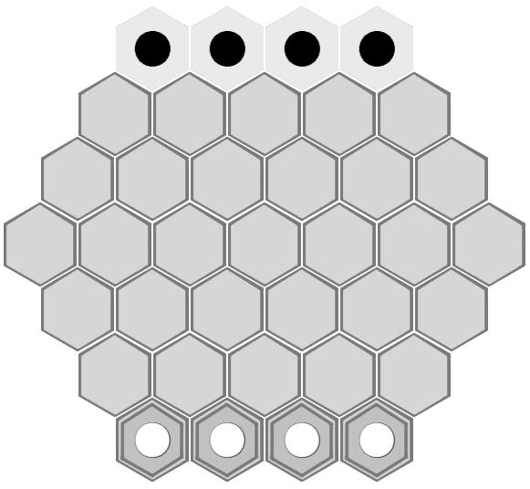
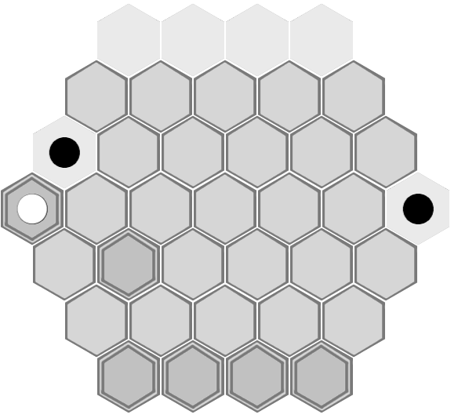

Isopath is played on a hexagonal grid with 4 tiles to a side. Each player starts out with 4 pieces.
In pocket83's rule sheets (sheet 1, sheet 2, sheet 3), he also references a variant with 5 tiles to a side, where each player starts out
with 5 pieces.

Each player's pieces start on rows at opposite sides of the board, standing on tile stacks of the correct height (2 tiles
for white, 0 tiles for black). All of the other spaces have exactly 1 tile on.
1. A move
Players alternate taking turns to move.
Each move consists of 2 parts. Every move must consist of the full 2 parts, except where the first
part wins the game. It is not permissible to "pass" or skip either one part of the move or the entire turn.
The 2 move parts must not be of the same type, e.g. you can't move 2 pieces in the same turn.
It is not permissible to make a first move part that leaves you unable to make a legal second move part.
Tile move
A tile is moved from one space that does not have a piece on it to another space that does not have
a piece on it.
Each space on the board always has 0, 1, or 2 tiles on it. You can't go below 0 or above 2.
Piece move
A piece is moved to any adjacent and unoccupied tile of the correct height. White can only place pieces on a stack of 2
tiles above the game board, and black can only place pieces directly on the game board.
Capture
Player A may capture player B's piece if, at the start of player A's turn, player B's piece is adjacent to
2 or more of player A's pieces. Player B's piece is then removed from the board. It is not mandatory
to capture a piece that is capturable. It is not permissible to capture 2 pieces in one turn.
2. Lateral teleport
With tiles labelled like so:

The tile pairs (a1,a4), (d1,d7), and (g1,g4) are considered adjacent for all purposes. This means it is possible to move
a piece between a1 and a4, between d1 and d7, and between g1 and g4. It also means a piece on d1 or d7 can
potentially be captured by a threat on the other edge of the board.
For example:

If it's black's turn to move, he can capture white's piece.
It is not possible to teleport diagonally. For example, from d1 to g4 or from a1 to g4. It is also not possible to teleport
longitudinally, e.g. from a1 to g1.
3. Home row
A player's "home row" is the set of 4 spaces that that player's pieces start on.
A player may never build or dig on his own home row, even if doing so would help the opponent.
4. Victory condition
A player wins the game as soon as he places one of his tiles on the opponent's home row.
Even if the opponent would be able to immediately capture the winning piece, he is unable to as he has
already lost and therefore does not get another turn.
Not stated in pocket83's original rules (but what I believe is an important clarification): a player also
wins as soon as he captures his opponent's final piece, as that would leave the opponent unable to move.
{kind=link}
{kind=link}
{kind=link}